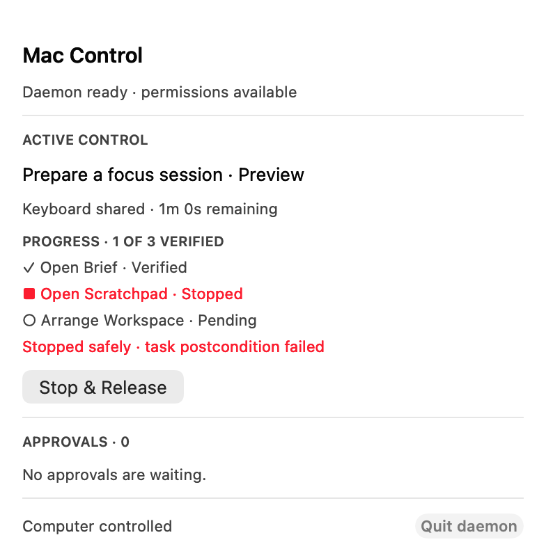

Mac Control · candidate preview
Native Mac actions agents can verify.
Local source candidate only. The image is an observed progress artifact, not the required final 16:9 capture. Authorization and verified-outcome proof remain open under MC-2.
Capture pending · no external publication claim
